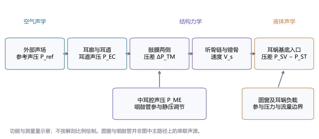
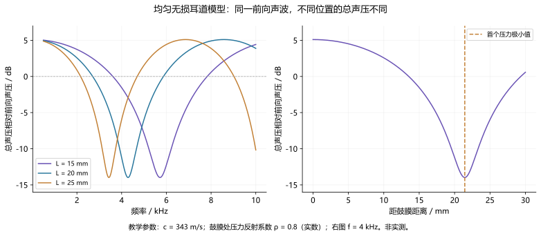
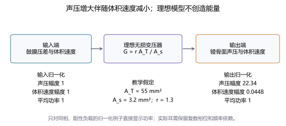
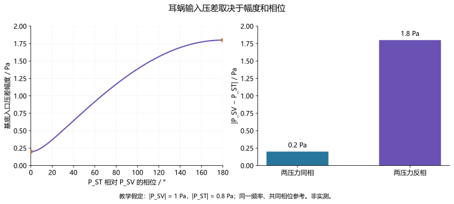

外耳与中耳传声
Sound Transmission through the Outer and Middle Ear
外耳改变到达鼓膜的声场，中耳通过鼓膜、听骨链及腔室的共同运动将空气声耦合到耳蜗液体。理解这一过程需要区分声压、结构速度、体积速度、功率与耳蜗两阶压差，并结合频率、测量位置和负载解释传递函数。
外耳与中耳传声（Sound Transmission through the Outer and Middle Ear）是声波经过耳廓、外耳道、鼓膜和听骨链，在耳蜗入口形成机械与液体声学驱动的过程。它连接外部声波与传播和耳蜗内的感觉换能：外耳改变声音到达鼓膜时的频谱与方向信息，中耳则把空气侧的压力变化耦合到内耳液体。1
这条传声路径并非一组对所有频率都给出相同增益的零件。耳道中的入射波与反射波、鼓膜不同部位的运动、听骨关节和韧带、含气中耳腔以及耳蜗负载，共同决定传递函数。描述“传声好不好”之前，需要先说明输入在哪里、输出是什么、测量频率和边界条件如何；声压、振动速度、声功率和听阈分别回答不同问题。23
本词条以正常气导传声的物理机制为主，结合耳道校准、机械测量、宽带声导抗和病理改变解释研究结果。下文四幅图均为原创教学示意或解析模型计算，不含患者数据；数值例子用于展示变量关系，不作为正常值、诊断界值或治疗效果预测。
1. 从声场到耳蜗：结构、边界与测量量
外耳包括耳廓和外耳道。鼓膜分隔外耳道与中耳腔，其内侧连接锤骨柄；锤骨、砧骨和镫骨构成听骨链，镫骨底板在卵圆窗处将运动传给耳蜗液体。圆窗膜提供另一处可运动边界，使两窗及耳蜗内部结构共同响应液体压力变化。咽鼓管连接中耳腔与鼻咽部，参与通气和静压调节。将这些结构排列为功能路径有助于理解传声，但不应把圆窗误画成位于镫骨之后的第二个串联“扩音器”。12


一个外耳传递函数可以定义为 。其中 是鼓膜附近的复数声压， 可以取听者缺席时、预定头部中心位置的自由场声压；需要固定声源方向和参考位置。如果换成耳道口声压作为参考，所得到的函数就不再包含完整的头部与耳廓作用。中耳传递函数则可能定义为 ，其单位为 m·s⁻¹·Pa⁻¹，与无量纲的声压比不同。
本文统一用同一频率下的复数有效值表示稳态声压和速度，采用 时间约定。 的单位为 Pa，结构速度 为 m/s，体积速度 为 m³/s；幅度比换算为分贝时使用 。这样可以同时保留幅度和相位，并避免把平均功率公式中的峰值与有效值约定混用。实际论文可能采用其他约定，比较数据前需要核对。
2. 外耳如何改变声音：方向滤波与耳道驻波
耳廓、头部和躯干改变不同方向声音的传播与散射，形成与频率和方向有关的耳旁声场。外耳道继续改变鼓膜处的压力；因此“外耳增益”不是一个与方向、耳道形状和测量条件无关的常数。这些方向线索与双耳时间差、强度差共同参与空间听觉，但物理传递函数本身不等于听者一定能利用的定位线索。
把开放耳道粗略视为一端开放、一端近似封闭的管道，可用四分之一波长关系理解某些共振。真实耳道存在弯曲、截面积变化、壁面损耗与入口辐射，鼓膜也不是完全刚性终端。Voss等2025年的CT几何研究纳入221只耳、覆盖晚期婴儿至老年，显示年龄变化及明显的个体差异；几何结果提示不宜把单一成人管长套用于所有年龄，但它并没有直接测量每只耳的声学传递函数。4
插入测量探头后，需要特别注意探头与鼓膜之间的残余耳道。前向波与鼓膜反射回来的波在探头处叠加，有时形成压力极小值。探头测得的总声压偏低，可能只是测量位置恰好接近驻波谷值，而非整个耳道或鼓膜收到的声音都偏低。此时按探头总声压补偿刺激，有可能增大实际前向声波。Charaziak与Shera通过不同探头位置及校准条件的耳声发射测量说明了这一问题。5
在均匀无损的一维教学模型中，以距鼓膜的距离 表示探头位置，鼓膜处压力反射系数为 ，则
这里 为探头平面的前向声压， 为频率， 为声速； 通常为复数且随频率变化。只有在本例假定 为正实数时，第一处压力极小值才对应 。这个“残余耳道的测量谷值”与开放耳道的自然共振涉及不同边界，不能因都出现四分之一波长就视为同一个现象。


婴幼儿还存在耳道尺寸、壁面力学和中耳性质的共同变化。Keefe等1993年比较不同婴幼儿年龄组与成人的耳道阻抗、反射系数，说明把小耳道仅仅理解为“缩短的成人管道”并不充分；本草稿对该文的结论核对限于摘要。6 研究或临床测量应报告探头位置、密封、年龄相关参考及校准方式，而不只报告设备上的名义声压级。
3. 鼓膜传声：两侧压差与分布式运动
推动鼓膜的直接声学量是两侧压差：
为外耳道侧声压， 为中耳腔侧声压，两者必须使用共同的相位参考。外耳道声压相同，不代表鼓膜压差相同；当穿孔改变两侧声场或腔室负载时，忽略内侧声压可能错误解释鼓膜驱动。
对一个假定轴向的合力，可把局部压差在鼓膜表面作积分：
这里 为局部法向， 为所选轴向单位向量。只有当压差、几何和运动模式满足简化条件时，才可进一步写成 。几何表面积、投影面积和用于等效模型的有效面积 并非同一概念；后者还涉及不同区域的幅度、相位以及它们与锤骨的耦合。
真实鼓膜是具有曲率、组织分区和附着约束的柔性结构。局部运动较大，未必对听骨输出贡献较大；不同区域也可能在同一频率呈现不同相位。Cheng等在人尸颞骨中用全场全息方法比较正向声刺激与反向机械刺激，报告两种驱动引起的表面运动图样不同。这项研究反对用单一刚性活塞概括所有鼓膜运动，但不能由某个复杂图样直接断定传声效率差；相关结论在本草稿中依据摘要核对。7
脐部位移或速度是容易定义的局部读数，却不是“整个鼓膜的运动量”。解释脐部读数时，需要同时知道耳道输入、频率以及听骨和耳蜗端的输出。某处鼓膜运动增加，可能是下游耦合变弱后负载减少，而非耳蜗输入增强；第9节的部分听骨链中断例子进一步说明这一点。
4. 听骨链与阻抗转换：为什么声压可增大而功率不增加
空气和耳蜗液体的声学性质差异很大，直接界面传声容易出现强反射。鼓膜、听骨链与两窗耦合改善了这一条件。面积比和杠杆比模型能说明压力与运动之间的交换关系，但省略了质量、柔性、损耗、腔声压和三维运动，不能据此计算完整中耳频率响应。23
首先要区分三种常见的阻抗定义：比声阻抗 的单位为 Pa·s/m，声学体积阻抗 为 Pa·s/m³，机械阻抗 为 N·s/m。对于面积为 、压力均匀且作活塞运动的边界，、，因此 。不转换面积和单位，直接比较这几种“阻抗”的数值没有意义。
在理想无损、刚性听骨杠杆和有效活塞鼓膜模型中，设鼓膜有效面积为 ，镫骨面积为 ，杠杆力增益为 ，则压力转换比近似为
输入 对应模型中的鼓膜驱动压差，输出 对应镫骨活塞作用于液体的等效压力。体积速度随压力转换比减小，说明这个模型所做的是阻抗变换。如果改用耳道声压作为输入，却没有处理鼓膜内侧压力，这个转换比就不能直接照搬。
用复数有效值时，端口平均功率为
其中星号表示复共轭。声压变大并不自动意味着功率变大，因为体积速度及其相位同样重要。真实中耳还会反射和耗散部分输入能量，且负载随频率变化。把“面积比约多少”改写成“听力必然提高多少分贝”，跨越了模型、耳蜗输入和行为听阈三个不同层级。


5. 频率、腔室、静压与中耳肌如何改变传递函数
一个基本的集中参数机械模型可写为 ： 为机械阻力， 为有效质量， 为刚度，。低频时刚度项影响较大，高频时质量项的重要性增加，阻力则参与耗散及峰谷形状。这个表达式解释了为什么改变不同组织或负载可能产生不同的频率图样，但并不意味着真实中耳只含一个质量、一个弹簧。
中耳腔、乳突气腔及其连接影响鼓膜内侧声压和等效声学负载。腔室容积、通道形态、通气与开闭状态都可能改变测量结果。研究者若为了看见听骨而打开骨壁，也改变了边界条件，不能仅把这一操作视为获得视野。Voss等2000年的颞骨研究同时关注镫骨速度、腔声压、鼓膜输入阻抗及腔阻抗，体现了对多端点耦合的测量思路；这里采用该文摘要确认的方法范围，不引用未核对的曲线数值。8
静压差与声压差也需要分开。静压可能改变鼓膜形状、预张力及听骨位置，使叠加在其上的小幅声振动呈现不同响应。鼓室图正是通过改变耳道静压、测量探测声响应来评估这一系统；峰值位置和形状与测量频率及模型有关，并不直接给出每个频率的耳蜗输入或听阈。11
中耳肌活动进一步改变机械边界。人类常规声反射主要涉及镫骨肌及其听觉脑干环路；鼓膜张肌的功能和刺激敏感性需要结合物种与情境讨论，不能把动物的两块肌肉反应直接套给人类。12 声反射有刺激强度和时间过程，也不能据其存在就假定所有突发强声都会被充分衰减。更合理的描述是：它提供了一个随刺激和神经状态改变的传声条件，以及可测量的反射读数。
6. 到达耳蜗的输入：镫骨速度与两阶复数压差
镫骨运动是常见的中耳输出指标。若镫骨底板作近似活塞运动，法向速度均匀，则 。存在摇摆或空间分布不均匀时，体积速度应由底板法向速度积分得到；一个激光测点测得的是沿光束方向的投影，未必等于整块底板的法向活塞速度。单点测量须说明观察角度与运动假设。
对耳蜗基底入口，可定义前庭阶与鼓阶的复数压力差：
Nakajima等2009年在人尸颞骨中同步测量两阶声压和镫骨运动，将这一压差作为耳蜗分隔结构的输入驱动。它保留了两阶的幅度与相位，比只取某一阶声压更直接地反映差动输入；听骨链中断等条件下，两阶共同变化尤其不能忽略。9
这里的测量是基底附近的入口读数。它并不是沿耳蜗各处的局部跨膜压力，也不是毛细胞电位或神经放电。正常气导条件下，镫骨速度可以是有用的输入代理量；病理或改换刺激路线后，代理关系需重新验证。卵圆窗、圆窗在中耳空气侧的声压，也不等于传感器在两阶液体内测得的压力。


骨导刺激改变了输入路线。颅骨振动可能经多个机制形成耳蜗驱动，不能概括为对外耳和中耳作用的完全绕过。Stieger等的颞骨研究用两阶压力和运动读数分析骨导输入，并强调骨振动给压力传感器带来的测量挑战；本草稿对该研究核对限于摘要。17 气导中成立的“耳道声压—镫骨速度—耳蜗压差”链条，不能不经验证便移用于骨导或圆窗驱动。
7. 怎样测量传声：研究范式与读数边界
传声研究的关键是把输入、输出和制备条件同时记录。下表各方法观察的量不同，不能排成从“较差”到“最好”的单一顺序。
| 方法与输入 | 主要读数 | 能回答的问题 | 解释边界与控制 |
|---|---|---|---|
| 探头声学与耳道校准 | 总声压、前向声压、复数反射系数 | 刺激在测量平面的声学状态 | 探头位置、密封和驻波；不直接测听骨运动 |
| 鼓室图与宽带声导抗 | 压力扫描响应、反射率或吸收率随频率变化 | 外中耳输入端的声学负载 | 年龄、设备、参考平面及静压；吸收率不是耳蜗获能比例 |
| 激光多普勒测振 | 脐部或听骨测点速度及相位 | 特定结构的机械传递函数 | 观察角、测点、空间模式；开腔与负载改变 |
| 全息或OCT测振 | 多点或体积范围内的运动图样 | 分布运动和结构间耦合 | 光学可见性、频率与物种；不能凭表面图样代替耳蜗输出 |
| 耳蜗内压力测量 | 两阶压力及复数压差 | 耳蜗入口差动驱动 | 侵入式传感器、密封、气泡、负载及骨振动伪迹 |
| 行为气骨导听阈 | 检出阈和气骨导差 | 整体听觉敏感性及传导因素 | 校准、掩蔽、耳蜗状态；不是直接的机械增益测量 |
声反射系数与吸收率：输入端测量不等于耳蜗获能
在一维均匀管、实数特性阻抗和适当参考平面条件下，压力反射系数可写为
为该平面看到的声学体积阻抗， 为空气密度， 为管截面积， 为按上述条件得到的功率吸收率。实际耳道需处理损耗、非均匀几何和参考平面误差。尤其应注意：这里“未反射回来的功率”可能分配到结构耗散和多种负载，并不全都成为耳蜗感觉驱动。
Rosowski等2012年在严格筛选的正常听力成人中比较耳道反射、脐部速度和鼓室图，观察到这些读数的关联具有频率依赖；某一指标正常不保证另一个指标在所有频率都正常。10 2024年的小儿宽带声导抗综述则强调了年龄及测量条件的重要性；用于诊断时，应回到特定年龄、设备和病理样本的验证资料。20
前向声压校准与耳声发射的双向传声
前向声压校准通过分解入射与反射成分，减小总声压驻波对刺激标定的影响。但耳声发射还需要从耳蜗经中耳和耳道反向到达探头；只校正前向刺激，并未自动消除返回传播和多次反射的影响。Charaziak与Shera区分了前向声压与发射声压的校正作用，说明“刺激已经校准”不能替代对发射测量链的检查。5
这意味着OAE偏弱可能同时涉及耳蜗产生机制、正向刺激不足和返回路径改变。解释时应结合耳道和中耳状态，而不把探头端振幅直接当作耳蜗输出。同样，听觉诱发电位的刺激虽由系统设定，真正到达耳蜗的输入仍受前端传声影响。
颞骨与光学测量：保留哪些条件
离体颞骨允许直接操作结构、比较改变前后结果，但失去活体肌张力和生理调节；保存、湿润、温度、通气及内耳完整性又会影响力学。2025年Baselt等比较新鲜与冻存颞骨的传递函数，发现组间差异与较大的个体变异。该研究为制备条件提供警示，但组间比较不能被改写成每只耳冻存后的固定损失；本草稿仅核对其摘要。19
空间成像提供另一种证据。Chang等2013年的OCT测振技术在龙猫耳中同时观察鼓膜与听骨运动，显示联合读数有助于区分模拟结构改变。它是动物技术演示，不能直接等同于已验证的人类常规诊断工具。21 一次可信的实验应保留基线、重复测量、声压与传感器校准、制备照片或操作记录，并说明改变后是否还能恢复原状态。
8. 三个计算例子：同一个“分贝”可能描述不同关系
例一：理想压力转换约27 dB，是否意味着听力提高27 dB
假定 mm²、 mm²、，则 ，对应 dB；体积速度比约为0.0448。面积使用相同单位即可求比，若计算实际力或体积速度，则应先换成m²。
该结果表示一个理想模型两端的压力幅度比。它没有计算真实鼓膜有效面积的频率依赖、组织损耗、耳蜗功率或听阈，也未规定以耳道声压而非鼓膜压差为输入。因而可以写“本例理想压力转换约27 dB”，不能写“中耳使每个人的听力提高27 dB”。同相阻性教学例子中，压力与体积速度一增一减，平均功率保持不变。
例二：探头总声压低，鼓膜处是否也低
令残余耳道 mm、 m/s、，首个压力极小值为4287.5 Hz。在该频率，探头处 ，相对前向声压为−13.98 dB；鼓膜处则为 。在无损模型中，鼓膜总声压与该探头总声压相差9倍，即19.08 dB。
如果控制器坚持把谷值位置的总声压调到某个固定目标，它可能提高前向波幅度。因此低探头读数并不能直接说明鼓膜驱动不足。上述差值完全由教学参数决定：实际反射系数为复数，耳道有损耗和几何变化，不应把19.08 dB当作真实耳的通用校正量。图2改变长度后谷值移动，展示了重复插入探头也可能影响测量的原因。
例三：两个阶声压幅度都不变，压差为何改变
设同一频率的 Pa， Pa，则
两压力同相时压差为0.2 Pa，反相时为1.8 Pa，相差9倍。只记录两阶各自的幅度，将完全遗漏这一变化。也不能把两阶的dB SPL读数直接相减来求压差；必须先取得共同参考下的复数压力，再相减和换算。
三个例子都产生分贝数值，却分别涉及理想端口压力比、测量位置效应和两阶差动输入。比较研究结果时，第一步应写清分母、参考平面和变量类型，再讨论曲线是否一致。
9. 病理与个体差异：改变了哪一段耦合
鼓膜穿孔：面积、腔室与位置效应
穿孔不仅减少完整鼓膜面积，也让外耳道与中耳腔通过开口形成新的声学耦合，改变鼓膜两侧压差。Voss等2001年的颞骨研究与Mehta等2006年的临床研究把穿孔大小、频率和中耳腔容积作为重要因素，并报告位置影响较小或不明显的条件性结论。1415
但“位置永远不重要”同样过度。Bevis等2022年在六个人颞骨中结合激光测振与有限元模型，报告其前后象限操作下的传递差异：前、后操作各用三个标本，中耳腔为部分开放状态，并非同一标本中两个位置的完全配对比较。16 不同研究的穿孔形态、制备状态、腔室边界和输出指标并不完全相同，目前不能把分歧压成一个适用于所有患者的排序。适当的表述是：大小、压差与腔室作用有较稳定的机制依据；位置效应需结合具体实验和临床条件评价。
听骨固定与中断：鼓膜运动不代表下游传声
听骨固定改变可动性，中断改变连接和负载，两者未必产生相同频率图样；部分连接残留也不同于完全断开。Fallon等期刊发表于2026年的研究，结合六个颞骨实验与两例临床观察，报告部分听骨链中断时高频镫骨运动受损，并在修复后观察到机械及临床读数改善。18
这一结果提示，局部鼓膜或脐部运动与镫骨输出可能朝不同方向改变；但小样本修复观察不等于所有高频听力损失的病因解释或效果保证。本草稿只核对该文摘要，正文中的术式细节和更广泛外推仍待专业审阅。强度或频率相同的纯音测听结果，也需要结合气骨导、耳镜和其他检查解释。
积液、压力与发育：多种因素同时改变
积液会改变含气腔室、鼓膜及听骨的负载，并可能影响组织运动和耗散。将它仅称为“增加一个质量”，或把负压只当作固定声压偏移，都不足以描述频率响应。病理模型需要明确液体接触位置、残余气腔、组织状态以及是否同时存在炎症或结构损伤；单一读数无法分离所有机制。3
年龄变化则同时涉及几何、壁面与结构成熟。CT几何、耳道声阻抗和小儿宽带声导抗各自提供一部分证据，应使用与年龄和测量条件匹配的参照。4620 把成人平均曲线用于婴儿、把某个发育年龄当成统一诊断界线，都会超出这些研究的证据范围。
10. 模型、研究进展与仍未解决的问题
面积—杠杆模型给出清楚的入门解释；集中参数模型把质量、刚度、耗散和腔室接入频率响应；分布参数或有限元模型则可描述复杂几何与局部运动。模型越复杂，需要的材料参数和边界条件也越多。若只拟合一条镫骨速度曲线，多个参数组合可能同样成立，不能据拟合优度便认定组织属性已经被唯一识别。
更有约束力的验证应同时比较耳道输入、鼓膜或脐部运动、镫骨输出和适当的耳蜗入口读数，并保留相位。还应使用未参与拟合的频率、改变条件或独立标本，检验模型能否预测。敏感性分析需把参数不确定性与个体差异传到输出，避免只展示一条没有范围的“正常耳”曲线。
2024—2026年的文献提示几个相互关联的方向。小儿宽带测量需要更细的年龄和条件参照；大跨度耳道几何数据有助于审视统一管道假设；新鲜与冻存颞骨的比较提醒研究者把制备状态纳入报告。部分听骨链中断的基础与临床相关研究，则说明可以围绕具体病理同时观察机械端点和行为端点，但小样本仍限制推广。2041918
声反射作为耳蜗突触病变线索也仍需谨慎。2023年的综述指出，动物模型与人类研究的证据一致性不同；人类反射读数还受测量参数、外中耳状态和神经环路影响。13 它可以构成多指标研究的一部分，不能单独把一个反射异常认定为特定突触损伤。
另一条边界是强声与瞬态。本文稳态、小振幅线性模型没有覆盖大形变、接触变化、破裂及爆炸冲击。关于爆炸传声模型的研究专门讨论了这些外推问题，因此不能把小信号频率响应直接代入强瞬态后，便宣称已经预测组织损伤。22
值得进一步研究的问题包括：哪些鼓膜局部运动最能约束听骨输出；怎样在活体中可靠地区分耳道声学与中耳负载；在不同病理下，镫骨运动与两阶压差的代理关系何时失效；以及如何将多端点力学证据与临床读数关联，同时保留其不同测量层级。这些问题比寻找一个普适的“中耳放大倍数”更贴近真实传声过程。
11. 阅读衔接、可复现条件与证据范围
理解压力、传播和相位可先读声波与传播；理解后续感觉过程可读耳蜗；耳道刺激标定与读数参照连接听力计校准和纯音测听。耳声发射需要同时考虑正向和反向传声，助听器及其验配则需要区分设备输出与实际耳道声学条件。将本词条的物理关系用于听力损失解释时，应结合相应检查和病理证据。
要复现一条传递函数，至少需要记录输入输出定义、共同相位参考、频率范围、刺激级别与校准、探头或测点位置、开闭腔及静压条件、标本保存和内耳负载状态。仅给出“增益若干dB”或一张平滑曲线，不足以判断两项研究是否测量同一对象。行为听阈还涉及感觉与决策，不能由机械图线直接替代。
本草稿的文献核对日期为2026年10月11日。检索结合主题搜索、2025年传声综述的前后向引文扩展及原始实验核查；重点覆盖耳道、鼓膜与听骨力学、耳蜗入口压力、声导抗和病理机制，并非系统综述或全部文献穷尽。参考资料分别标注全文相关段落、摘要或官方文档的实际访问范围，摘要核对的论文未被当作已通读全文。教学图与计算可由随稿脚本重现，不复用论文图像。
当前状态：待作者确认的深度词条草稿，尚未发布，尚未完成专业审阅。 本文的物理推导、研究综述和术语衔接均可在确认前修改；“文献已核对”不代表临床结论已经获得专业审核。
参考文献与证据范围
- [1] How Do We Hear?National Institute on Deafness and Other Communication Disorders (n.d.). NIDCD health information.官方文档／讲义：传声结构概览；官方科普资料。
- [2] Lecture 12: Middle Ear Structure–Function & PathologyMIT 6.551J / HST.714J (2004). Acoustics of Speech and Hearing, course lecture notes.官方文档／讲义：阅读讲义中结构、二端口、负载和功率匹配内容；图示与计算另行原创。
- [3] The Transmission of Sound to the Cochlea in Normal and Pathological Human Middle Ears.Rosowski JJ. (2025). J Assoc Res Otolaryngol 26(4). DOI: 10.1007/s10162-025-00997-y.已读全文相关部分：阅读检索服务可访问的综述原文中简化模型、颞骨制备及传声路径段落；未取得可下载全文。
- [4] Comprehensive Measurements and Analyses of Ear Canal Geometry From Late Infancy Through Late Adulthood: Age-Related Variations and Implications for Basic Science and Audiological Measurements.Voss SE, Remenschneider AK, Farrar RM, Myoung S, Horton NJ. (2025). Trends Hear 29. DOI: 10.1177/23312165251345572.已读全文相关部分：取得全文 XML，阅读摘要、几何方法及年龄与个体差异结果；CT几何研究不是声学传递函数测量。
- [5] Compensating for ear-canal acoustics when measuring otoacoustic emissions.Charaziak KK, Shera CA. (2017). J Acoust Soc Am 141(1). DOI: 10.1121/1.4973618.已读全文相关部分：阅读可访问原文的校准理论、方法及探头位置结果；前向声压与发射声压校正作用不同。
- [6] Ear-canal impedance and reflection coefficient in human infants and adults.Keefe DH, Bulen JC, Arehart KH, Burns EM. (1993). J Acoust Soc Am 94(5). DOI: 10.1121/1.407347.摘要核对：核对摘要中的年龄组、耳道阻抗和反射系数发育结论；未阅读全文。
- [7] Tympanic membrane surface motions in forward and reverse middle ear transmissions.Cheng JT, Maftoon N, Guignard J, Ravicz ME, Rosowski J. (2019). J Acoust Soc Am 145(1). DOI: 10.1121/1.5087134.摘要核对：核对摘要：人尸颞骨全场全息测量，正反向刺激的鼓膜运动不同；未阅读全文。
- [8] Acoustic responses of the human middle ear.Voss SE, Rosowski JJ, Merchant SN, Peake WT. (2000). Hear Res 150(1-2). DOI: 10.1016/s0378-5955(00)00177-5.摘要核对：核对摘要列出的镫骨速度、腔声压、鼓膜输入阻抗及腔阻抗测量量；未阅读全文。
- [9] Differential intracochlear sound pressure measurements in normal human temporal bones.Nakajima HH, Dong W, Olson ES, Merchant SN, Ravicz ME, Rosowski JJ. (2009). J Assoc Res Otolaryngol 10(1). DOI: 10.1007/s10162-008-0150-y.已读全文相关部分：阅读检索服务可访问的原文结果、结论及传感器方法段落；基底两阶复数压差与听骨链中断结果；未下载通读全文。
- [10] Ear-canal reflectance, umbo velocity, and tympanometry in normal-hearing adults.Rosowski JJ, Nakajima HH, Hamade MA, Mahfoud L, Merchant GR, Halpin CF, Merchant SN. (2012). Ear Hear 33(1). DOI: 10.1097/aud.0b013e31822ccb76.摘要核对：核对摘要的58耳样本、声反射、脐部速度、鼓室图及频率依赖关联；未阅读全文。
- [11] Hearing Loss in AdultsAmerican Speech-Language-Hearing Association (n.d.). ASHA Practice Portal.官方文档／讲义：阅读评估部分关于声导抗、鼓室图、声反射和听力检查的作用。
- [12] Auditory Brainstem Circuits that Mediate the Middle Ear Muscle ReflexMukerji S; Windsor AM; Lee DJ (2010). Trends in Amplification 14(3):170–191. DOI: 10.1177/1084713810381771.摘要核对：核对摘要及综述说明中的镫骨肌反射环路与物种差异；未通读全文。
- [13] The middle ear muscle reflex: Current and future role in assessing noise-induced cochlear damage.Trevino M, Zang A, Lobarinas E. (2023). J Acoust Soc Am 153(1). DOI: 10.1121/10.0016853.已读全文相关部分：阅读检索服务可访问的原文反射测量、临床应用及结论段落；人类与动物突触损伤证据边界；未下载通读全文。
- [14] How do tympanic-membrane perforations affect human middle-ear sound transmission?Voss SE, Rosowski JJ, Merchant SN, Peake WT. (2001). Acta Otolaryngol 121(2). DOI: 10.1080/000164801300043343.摘要核对：核对摘要：穿孔大小、频率、腔容积及位置效应；未阅读全文。
- [15] Determinants of hearing loss in perforations of the tympanic membrane.Mehta RP, Rosowski JJ, Voss SE, O'Neil E, Merchant SN. (2006). Otol Neurotol 27(2). DOI: 10.1097/01.mao.0000176177.17636.53.已读全文相关部分：阅读检索服务可访问的原文引言与结论，并核对摘要；临床穿孔位置影响有限的条件性结果；未下载通读全文。
- [16] The impact of tympanic membrane perforations on middle ear transfer function.Bevis N, Sackmann B, Effertz T, Lauxmann M, Beutner D. (2022). Eur Arch Otorhinolaryngol 279(7). DOI: 10.1007/s00405-021-07078-9.已读全文相关部分：取得全文 XML，阅读六个人颞骨的穿孔、激光测振及有限元分析方法和结果；保留与既往位置效应结论的分歧。
- [17] Intracochlear Sound Pressure Measurements in Normal Human Temporal Bones During Bone Conduction Stimulation.Stieger C, Guan X, Farahmand RB, Page BF, Merchant JP, Abur D, Nakajima HH. (2018). J Assoc Res Otolaryngol 19(5). DOI: 10.1007/s10162-018-00684-1.摘要核对：核对摘要中的骨导两阶声压与运动读数、骨振动伪迹及方法边界；未阅读全文。
- [18] Restoration of High-Frequency Middle Ear Function in Partial Ossicular Discontinuity: A Basic Science and Clinical Correlation.Fallon K, Inuzuka Y, Cheng JT, Rosowski JJ, Remenschneider AK. (2026). Otol Neurotol 47(1). DOI: 10.1097/mao.0000000000004657.摘要核对：核对摘要：六个颞骨与两例临床相关观察；期刊年2026、在线发表2025，未阅读全文。
- [19] Middle-ear sound transmission in human cadaveric temporal bones: fresh vs. fresh-frozenBaselt B; Schär M; Huber A; Sim JH (2025). Hearing Research 467:109433. DOI: 10.1016/j.heares.2025.109433.摘要核对：核对出版者可检索摘要：101个颞骨、57新鲜与44冻存的组间比较；出版者正文未能访问，不能解释为同一标本的冻结因果试验。
- [20] Advancements in Pediatric Audiological Assessments Using Wideband Acoustic Immittance: A Review.Jiang W, Mu Y, Zhao F, Wang P. (2024). Audiol Res 14(4). DOI: 10.3390/audiolres14040058.已读全文相关部分：取得全文 XML，阅读摘要与小儿宽带声导抗综述相关段落；综述提供方法概览，不能代替设备和年龄特定诊断验证。
- [21] Simultaneous 3D imaging of sound-induced motions of the tympanic membrane and middle ear ossicles.Chang EW, Cheng JT, Röösli C, Kobler JB, Rosowski JJ, Yun SH. (2013). Hear Res 304. DOI: 10.1016/j.heares.2013.06.006.摘要核对：核对摘要：龙猫耳 OCT 测振，同时观测鼓膜与听骨；属于动物技术演示，未阅读全文。
- [22] Limitations of present models of blast-induced sound power conduction through the external and middle ear.Rosowski JJ, Remenschneider AK, Tao Cheng J. (2019). J Acoust Soc Am 146(5). DOI: 10.1121/1.5132288.摘要核对：核对摘要及可检索原文引言中的强瞬态传声模型限制；未通读全文。